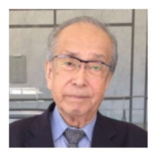

| 戦争の記憶 002: 細川浩史 (The BBB: Breakthrough Bandwagon Books) | |
| 早川洋平 | |
| The BBB: Breakthrough Bandwagon Books (2015) | |
（邦題 : 『戦争の記憶 002: 細川浩史』）
Originally told in Japanese by Koji Hosokawa
Interviewed by Yohei Hayakawa
Summarized by Akiko Ogawa
Translated by Yoshino Wakamatsu
Cover design by Tanya
Copyright © 2015 Kiqtas / The BBB : Breakthrough Bandwagon Books
All rights reserved.
ISBN: 978-1-329-58123-4
（このプロジェクトについて）
──「戦争の記憶」は、戦争体験者の 肉声を残すプロジェクトです。特定の団体を支持・支援したり、思想を 煽動したりするものではありません──
また、インタビュー聴取に際しては、以下ご了承のうえお聴き下さい。
・インタビューの内容は、体験者の方個人の考え方や意見をそのままにしてあります。また、現在では適切ではないとされる表現が含まれている場合がありますが、修正せずにそのままにしてあります。
・インタビューは、体験者の方が取材 時点での知識と記憶に基づいて語っていることを収録したものです。 そのため、記憶違いやあいまいな点が含まれている場合があります。
毎年 「終戦の日」前に集中する報道を見て、『火垂るの墓』を見て、「 戦争は惨い、二度と起こしてはいけない」と心に決めつつも 8 月 16 日からはまた忙しい日常。
そんな繰り返しだったけれど、終戦 68 年の 2013 年。 節目の年ではないのに、『風立ちぬ』『終戦のエンペラー』『永遠の 0 』と 戦争をテーマにした映画の公開がなぜか多いと感じるのは僕だけでしょうか。
インタビュアーとして、世界で初めて原爆が投下された広島に住む者として、 このテーマと向き合わなければならない。ずっと心のどこかで思っていました。けれど、重い腰があがらない......。
そんな中で複数の方から今夏、こう言われました。
「インタビュアーなら、戦争体験者のインタビューをしてほしい。 ポッドキャストなら肉声を 50 年後も 100 年後も残すことができるのでは？」
終戦から 70 年近く経ち、戦争体験を語れる方は年々少なくなってきています。だからこそ、彼ら彼女らの思いを「肉声のまま」伝えなければならない。一刻も早く。
「戦争の記憶」はラジオ番組ではありませんし、特定の思想へ煽動 するものでもありません。ただ、戦争の時代を生きた方々の肉声を、ポッドキャストというしくみを借りて、 大切 に残していきたい。今を生きるすべての世代の人へ。国内外の人へ。 これから地球に生まれ続けてくるまだ見ぬ僕らの子孫へ。
平和とは何かを考える、そんなきっかけとなれば幸いです。
2013 年 10 月 1 日 早川洋平 （プロインタビュアー／メディアジャーナリスト）
（ 細川浩史 さんについて）
原爆体験を伝承できる後継者を育成。
自分のこととして考える「広島」

ほそかわ・こうじ ／ 19 28 年 広島生まれ。
広島平和記念資料館ボランティアガイドを務める。
細 川浩史さんは、海軍の工場にいたこともある、かつての「軍国少年」 。 原爆で妹を亡くし、爆心地近くでの恐ろしい光景を目にし、今でも心の中に深く刺さったトゲが抜けないという。 現在は、広島平和記念資料館のボランティアガイドを務め、広島市の 原爆体験伝承者養成事業に参加するなど、積極的に体験を伝えている 。 それは、魂のこもった伝承者を育てたいという思いからだ。「 広島」を自分のこととして考えてほしい、という細川さんにその体験を聞いた。
（海軍の工場で船の部品を作る軍国少年）
──「戦争の記憶」という言葉を聞いて、どのようなことが最初に思い浮かびますか。
いい記憶はないです。子供の頃は戦争に明け暮れていて、ある意味では私も軍国少年の一人でした。
──当時の軍国少年の細川さんはどのような意識だったのですか。心の中では違和感があったのでしょうか。それとも、そういう環境だからごく自然に戦争を受けいれていたのでしょうか。
軍国少年とは言っても、志願して戦地に行くつもりはなかったです。広島は代表的な軍事都市の一つでもあったので、広島からたくさんの兵士たちが軍用船で戦場に送 られました。そして、そのうちの多くの人が帰って来ませんでした。
最も暗い記憶は、学徒勤労動員です。朝から勤労奉仕するんです。私が最初に行ったのは海軍の工場でした。 16 歳くらいだったかな。特訓を受け、電気溶 接の免許も取らされました。そして、船の部品を作っていたのです。
昭和 20 年の正月前後だったと思いますが、戦艦大和が最後の出撃に向けて整備をするためドックに入ってきたとき、私は機会があって間近で見ました。艦の底まで覗いて見ることができ、息を飲んだことを覚えています。大和を至近距離で見た人は、日本国中探しても、もうあまりいないでしょうね。大和は 4 月の始めに沖縄に向けて出撃し 、アメリカ空軍の爆撃を受け、あえなく海底に沈んでしまいました 。
この頃、本土決戦が始まるということで緊迫したムードでした。 アメリカ軍が上陸してくる地として想定されていたのは九州です。 アメリカ軍による日本本土上陸作戦の第一段階は「オリンピック作戦」と呼ばれていたらしいですね。 それで、福岡の山の中に通信基地を急ごしらえで作ることになり、当時広島逓信局にいた私はケーブルの工事をしに行かされました。その頃の九州は空襲が多かったので、空襲に怯えた毎日でした。 7 月末に、疲れ果てて広島に帰りました。帰った数日後、広島に原爆が投下されるわけですが、当然そんなことは知る由もありません。久しぶりの出勤の日が、 8 月 6 日だったのです。私にはかわいい妹がおりましたが、 8 月 6 日のその日、「行ってきます」と言ったきり帰っては来ませんでした（妹の森脇瑤子さんは当時 13 歳で広島県女 1 年生だった）。
（「水を飲ませてあげればよかった」今も心に刺さるトゲ）
──いろいろな方にインタビューをしていると、「ピカっと光ったものを見てすぐに意識を失った」などのお話を聞きますが、細川さんはどうでしたか。
もし今、原爆に襲われ、爆心地から 1.3 キロ以内にいたら、こんなテーブルも荷物も、人間もすべてゴミですよ。いっしょくたに吹き上げられて、部屋に隅に叩きつけられるでしょう。全身打撲です。私はなんとか自力で歩くことができましたの で、すぐ隣の病院に行きました。隣は広島逓信病院だったのです。
行ってみると、すでに人々でいっぱいでした。しかも、医者も看護士も怪我をしており、医療器具は破壊され、薬品が散乱している状態です。病院としての機能は無くなっていましたね。 私は「密集地帯からは早く離れなけれ ばならない」という頭が働いて、ここから遠ざかろうとしました。
ご存じのように広島はたくさん川があります。京橋川まで 400 ～ 500 メートルでしたので、そこへ歩いて行くことにしました。歩きながら見た広島の街は、まず建物はぺしゃんこになっていました。原爆は今の原爆ドームの上空 600 メートルあたりで爆発しました。上から下に向かっての風圧ですよね。マッチ箱を上から手でつぶしたような感じです。建物の中にいた人は、何がなんだかわからないまま、つぶされてしまったでしょう。私たちが歩いていると、その気配を感じて助けを求める人が多くいました。ほうぼうから声だけが聞こえてきたのを覚えています。でも、助けることはできませんでした。ど こにいるのかわからず、助けようという気は起こりませんでした。
川に辿りつくと、八丁堀で建物疎開（空襲による火災で重要施設が延焼しないように、計画された防火帯の建築物を撤去すること）作業に従事していた崇徳中学校（広島市にある仏教系の男子校）の 1 年生たちが被爆して逃げてきていました。今でもよく覚えていますけれども、大火傷を負った学生が「水を飲ませてくれ」って言うんですね。でも、与えませんでした。火傷の重症者に水を与えると死 ぬから、決して与えてはいけないと厳しく教えられていたからです。 彼らは水をもらうことができないまま･･･、川に逃れてきていた全員がそこで死にました。結局死んでしまうのであれば、その前に水を飲ませてあげればよかった。この体験は、私の心の中にトゲとなって残っています。トゲは刺さったままです。･･･本当にかわいそうでしたね。 それ以来、その場所に用事があっても、同じルートを通ったことはありません。
──今でもその近くはあまり通りたくないのでしょうか。
他のルートを使うようにし、ずっと避けてきました。でも、最近になって、広島市の被爆体験伝承者養成プロジェクトの一環で、フィールドワークとして他のメンバーを連れて歩きました。その前に、中国新聞の取材があり、記者と一緒に河原を歩いたことがあります。驚くべきことに、 68 年前と同じ光景でした。今、河原にはマンションが立ち並んでいますが、当時もそこは高級住宅地だったのです。爆心地からこんなに近くて、当時とあまり 光景が変わらない場所というのは他にないのではないでしょうか。
当時のことは克明に覚えています。 その晩、私は同僚の家に泊まらせてもらいました。彼の家は上流のほうの、少し離れた場所にあったのです。明くる日 、 家に帰ろうと、昨日通った道を歩いて驚きました。ぺしゃんこになっていた家は灰になり、あとかたもなくなっています。川に飛び込んだ人たちの白骨遺体。黒焦げになった人たちの遺体。道路に散らばっている、性別もわからない ほどパンパンに膨れ上がった人たちの遺体。静かで不気味でした。
その後、私は原因不明の病気にいくつか襲われました。大きな傷跡が 2 つあります。今でも過労になったりすると、それらがまた顔を出し、緊急入院したこともあります。 後遺症にはいまだ怯えていますね。健康には一番気をつけています。
─ ── 8 月 6 日のお話を中心に聞いてきました。その 1 週間後くらいに終戦を迎えるわけですが、玉音放送のとき細川さんはどうされていましたか。
ラジオをリアルタイムで聞いたわけではありませんが、日本が降伏したことはすぐに伝わりました。信じられない気持ちもありましたが、一方では納得する部分もありました。私は学徒動員で呉の海軍技術大佐の側近をしていたことがあり、その頃の機密事項をかなり知ることができていたのです。信用してもらえていたのでしょうか、見ようと思えば見ることができた。もちろん誰にも口外はしませんでした。 そういったことも あって、敗戦と聞いても、他の人ほどは驚かなかったと思います。
終戦後の数日間は、生き残りの兵士たちが「一億玉砕」「徹底抗戦」とまだ叫んでいました。私はそれを白けた気持ちで見ていました。軍艦なんて、もうないわけですからね。
（伝承者養成で重視するのはスピリッツ）
──こういった体験をお話しするのは楽しいことではないですよね。細川さんは広島平和記念資料館のガイドをされていたり、広島市の被爆体験伝承者養成事業に参加されていますが、細川さんを突き動かすものって何でしょうか。
資料館に来られる方や被爆体験伝承者として学びに来る方は、一生懸命マニュアルを読んで勉強していますね。でも、私はコピーを読んで聞かせたって伝わらないと思っているわけです。だから、自分の体験を自分の声で伝えています。伝 承者養成事業の私のチームで、重視しているのはスピリッツです。
チームのメンバーを最初にお連れしたのは、私が被爆した場所です。今の中国郵政局ができている広大な敷地の中ですよ。そこには、当時私が血まみれの手でつかまりながら下りた、石造りの立派な階段の一部がモニュメントとしてあるんです。そこで、「この階段には、たくさんの血の跡がついていた」と伝えました。そして、京橋川ま で逃れて行った、そのルートも一緒に辿りながらお話をしました。
他には、『父と暮らせば』（ 2004 年公開の日本映画。井上ひさし原作の舞台作品を映画化したもの）を見せています。舞台を録画したビデオテープも持っているんです。この作品は、 スピリッツを理解してもらうためにとてもいい教材です。 主人公の美津江の父は被爆して亡くなりました。そして、幽霊として出てくるんですね。美津江が通っていた学校は、私の妹が通っていた学校なんです。 映画の主演は宮沢りえさんですが、彼女はこの映画出演が決まったあと、 1 人で広島平和記念資料館に来て一般のお客 さんに混じって見てまわっています。自分の肌で広島を感じるために。
──まさにスピリッツですね。
そうなんです。そんな話もしながら、映画を見せています。 私はたまたま資料館にいて、周囲の人に「今、宮沢りえさんが来ているよ」と教えられましたが、気づいている人はほとんどいませんでした。化粧っけなく、目立たないように来ていましたから ね。宮沢りえさんは、一つひとつの資料をつぶさに見ていましたよ。 ほとんどの人は、展示物を眺めて通り過ぎるだけなんですが。
──耳が痛いですね。私もかつてそうだったと思います。
眺めるのでなく、読んでほしいんです。そうすると、声が聞こえてきますよ。遺品にしても、たとえば双眼鏡があります。革のケースに黒い文字で持ち主の名前が書いてある。 CAPT ロバート・ A ・ルイス。いったい何者であったのか。そこま で疑問を持ちながら見てくれれば、いろいろわかるわけです。 スピリッツをわかってもらいたいので、そんな話をすることもありま すね。
いま私が使命としているのは、原爆体験者の証言を後継者につないでいくプロジェクトです。残り少ない時間を使って、なんとか伝えていきたいと思っています。
（ 広島を自分のこととして考えてほしい ）
── 2011 年に東日本大震災、それから福島での原発事故がありました。恥ずかしながら、日本にはこんなにたくさんの原子力発電所があるのかと、ようやく気づきました。原発のことも含め、細川さんはいまの日本をどのように見ていらっしゃいますか。
天下国家を論じることはできませんが、自分で制御できないものを作ったからこうなるのだと思います。制御できないものを持つべきではない。私はメルケルさんの為政者としての哲学は尊敬していますね。
──最後に、あらためてこれをお聴きお聞きの方に伝えたいメッセージをいただけますか。
私はアメリカには行きたくないと思っていました。初めてアメリカに行ったのは 2008 年です。ユナイテッド航空の飛行機に乗るとき、非常に重い気持ちになりました。でも、アメリカカリフォルニア州で出会った人たちはみんないい人 でした。フレンドリーに接してくれて、打ち解けた話ができました。
サンフランシスコからモントレーへ行く車の中で、サンセットを見ました。右側の窓に、大きく真っ赤な太陽がアメリカ大陸に沈んでいくのが見えたんです。左側の窓には、月が見えました。図らずも、アメリカを感じる体験をしたわけです。そして、この広大な地に住んでいるアメリカの人たちは、一人ひとりは明るく友好的で平和を愛する国民だということがよくわかり ました。これによって、私のアメリカ観は変わりましたね。
一人ひとりは、いい人なんです。しかし、国家というものは、とんでもない方向に行く 場合がある。だから、権力者のことはよく選ばなければなりません。 とくに若い人たちに言いたいのですが、選挙に行くときは自分のこととして考えて欲しいですね。
──政治に無関心でいたら、いつのまにか国がとんでもなくなっていた、なんてことにならないように。
そうです。広島も自分のこととして考えてほしい。 戦争は国家的なテロだと思います。みんなクレイジーになります。その究極が原爆だと思います。原爆は広島と長崎に落ちたわけですが、人類に落ちたとも言えるでしょう。
──今後、細川さんがやり続けたいこと、やらねばならないと思うこととはどういったことですか。
私にはもうあまり時間がありません。お話しできるのも、これが最後かもしれない。わからないわけです。本当はもっと時間がほしいですね。 当面は、原爆体験者の後継者を育てることです。これをまっとうしたいと思っています。 （了）
***
Listen to this interview on Podcast
https://itunes.apple.com/jp/podcast/zhan-zhengno-ji-yi-memories/id718023220?mt=2
Listen to this interview on you r PC
http://podcast5.kiqtas.jp/memories/archives/2013/10/2memories2-koji-hosokawa.html
Visit the website of Memories of War